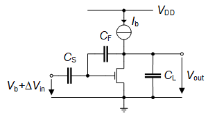
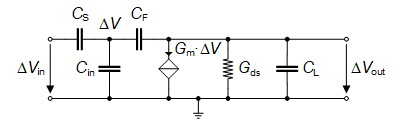

Common-source Stage Optimization using the Inversion Coefficient
In Closed-loop Configuration (Version 1)
1 Introduction

In this notebook, we want to minimize the bias current of the common-source (CS) closed-loop (CL) amplifier of Figure 1 for achieving a given gain and bandwidth.
2 Analysis
2.1 Small-signal Transfer Function

The small-signal schematic of the closed-loop common-source stage is shown in Figure 2. Notice that we added the input capacitance \(C_{in}\) which essentially corresponds to the transistor gate-to-source and gate-to-bulk capacitances. The gate-to-drain capacitance is included in \(C_F\) and therefore needs to be de-embedded in the design. It is easy to show that the transfer function is given by \[\begin{equation} A(s) \triangleq \frac{\Delta V_{out}}{\Delta V_{in}} = A_0 \cdot \frac{1-s/\omega_z}{1+s/\omega_p} \end{equation}\] where \[\begin{align} A_0 &= A_{0,ideal} \cdot \frac{\beta \cdot A_{dc}}{1 + \beta \cdot A_{dc}} \cong A_{0,ideal}\quad\text{for $A_{dc} \gg 1$},\\ A_{0,ideal} &= -\frac{C_S}{C_F},\\ \omega_p &= \frac{1+\beta \cdot A_{dc}}{R_{ds} \cdot C_{out}} \cong \frac{\beta \cdot A_{dc}}{R_{ds} \cdot C_{out}} = \frac{\beta \cdot G_m}{C_{out}},\\ \omega_z &= \frac{G_m}{C_F}. \end{align}\]
\(A_{dc} = G_m \cdot R_{ds}\) is the CS transistor DC voltage gain, \(\beta \cdot A_{dc}\) the DC loop gain where \(\beta\) is the feedback gain which can be calculated from the schematic shown Figure 3 as \[\begin{equation} \beta \triangleq \frac{V}{V_{out}} = \frac{C_F}{C_F + C_S + C_{in}}. \end{equation}\]
The amplifier bandwidth is given by \(\omega_c = \omega_p \cong \beta \cdot G_m/C_{out}\) where \(C_{out}\) is the total capacitance seen at the output \[\begin{equation} C_{out} = C_L + (1-\beta) \cdot C_F = C_L + \frac{C_S + C_{in}}{C_F + C_S + C_{in}} \cdot C_F. \end{equation}\]
In order to achieve some DC gain \(C_F\) is smaller than \(C_S\) and usually also smaller than \(C_L\). This means that the right-hand side (RHS) zero is located higher than the unity gain frequency which is then simply given by \(\omega_u \cong G_m/C_{out}\). For frequencies below \(\omega_u\), the magnitude of the transfer function is shown in Figure 4.
2.2 Minimum current for a given bandwidth (long-channel)
When optimizing the CL CS amplifier for low current consumption, the transistor is often biased in moderate or even weak inversion leading to large transistor and therefore an increased input and output capacitance. If we assume that the transistor parasitic capacitance at the drain is much smaller than the load capacitance, we can model this input capacitance as the sum of the gate-to-source and gate-to-bulk capacitances \[\begin{equation} C_{in} = C_{GS} + C_{GB}. \end{equation}\] Assuming transistor is biased in saturation, we have \[\begin{equation} C_{GS} \cong W\,L\,C_{ox} \cdot c_{gsi} + C_{GSo} \cdot W \end{equation}\] where \(c_{gsi}\) is the normalized intrinsic gate-to-source capacitance which is typically equal to \(2/3\) in strong inversion and is proportionnal to \(IC\) in weak inversion. \(C_{GSo}\) is the gate-to-source overlap capacitance per unit width.
The gate-to-bulk capacitance \(C_{GB}\) is given by \[\begin{equation} C_{GB} \cong \,W\,L\,C_{ox} \cdot c_{gbi} + C_{GBo} \cdot W, \end{equation}\] where \(c_{gbi}\) is the normalized gate-to-bulk intrinsic capacitance which in strong inversion is given by \[\begin{equation} c_{gbi} = \frac{n-1}{3n}. \end{equation}\] \(C_{GBo}\) is the gate-to-bulk overlap capacitance per unit width.
For a given transistor length \(L\), the input capacitance \(C_{in}\) scales with \(W\) according to \[\begin{equation} C_{in} = C_{GW} \cdot W, \end{equation}\] where \(C_{GW}\) is the gate-to-source and gate-to-bulk capacitance per unit width given by \[\begin{equation} C_{GW} = L\,C_{ox} \cdot (c_{gsi} + c_{gbi}) + C_{GSo} + C_{GBo}. \end{equation}\]
In order to achieve a certain bandwidth we need to have a certain transconductance for a certain load capacitance. In order to maximize the current efficiency, we should bias the transistor in weak inversion. This leads to a large transistor and therefore large parasitic capacitances which will impact the bandwidth. Imposing the bandwidth, at some point the capacitance becomes so large that it is no more possible to achieve the required transconductance in weak inversion for the desired bandwidth. Does this mean that there is a minimum current for the CL CS amplifier to achieve a certain bandwidth?
To answer this question we need to solve the following set of equations for \(I_b\) and \(W\) assuming a given length \(L\) \[\begin{align} \omega_c &= \beta \cdot \frac{G_m}{C_{out}},\\ C_{out} &= C_L + (1-\beta) \cdot C_F,\\ \beta &= \frac{C_F}{C_F + C_S + C_{in}},\\ C_{in} &= W \cdot C_{GW},\\ I_b &= I_{spec\Box} \cdot \frac{W}{L} \cdot IC,\\ G_m &= \frac{I_{spec\Box}}{n U_T} \cdot \frac{W}{L} \cdot g_{ms}(IC), \end{align}\] where \(g_{ms}(IC)\) is the long-channel normalized source transconductance given by \[\begin{equation} g_{ms} = \frac{\sqrt{4 IC + 1} - 1}{2} = \frac{2 IC}{\sqrt{4 IC + 1} + 1}. \end{equation}\] Solving for \(I_b\) and \(W/L\) leads to the following normalized solutions \[\begin{align}\label{eq:ib_AR} i_b &\triangleq \frac{I_b}{I_{spec\Box} \cdot \Omega} = \frac{IC}{g_{ms}(IC) - \Theta},\\ AR &\triangleq \frac{W/L}{\Omega} =\frac{1}{g_{ms} - \Theta}, \end{align}\] where \[\begin{align} \Omega &\triangleq \frac{\omega_c}{\omega_L},\\ \omega_L &\triangleq \frac{I_{spec\Box}}{n U_T} \cdot \frac{1}{(1+C_S/C_L+C_S/C_F) \cdot C_L},\\ \Theta &\triangleq \frac{\omega_c}{\omega_W},\\ \omega_W &\triangleq \frac{I_{spec\Box}}{n U_T} \cdot \frac{1}{(1+C_L/C_F) \cdot C_{GW} \cdot L}. \end{align}\]
The normalized current \(i_b\) is plotted below for different values of \(\Theta\).
From Figure 5, we clearly see that there is a minimum current for a given value of parameter \(\Theta\). We can find the optimum inversion coefficient \(IC_{opt}\) which is given by \[\begin{align} IC_{opt} &= \left(\sqrt{\Theta \cdot (1+\Theta)} + \Theta + \frac{1}{2}\right)^2 - \frac{1}{4}\\ &= 2 \Theta \cdot (1+\Theta) + (1+2\Theta) \cdot \sqrt{\Theta \cdot (1+\Theta)}\\ &\cong 2 \Theta + \sqrt{\Theta} \;\; \textsf{for $\Theta \ll 1$}. \end{align}\] We also see that there is a minimum inversion coefficient \(IC_{lim}\) below which the desired bandwidth \(\omega_c\) can no more be achieved \[\begin{equation} IC_{lim} = \Theta \cdot (1+\Theta) \cong \Theta, \end{equation}\] which is about equal to \(\Theta\) for small values of \(\Theta\).
The optimum normalized current is given by \[\begin{equation} i_{bopt} \triangleq i_b(IC_{opt}) = 1 + 2\Theta +2\sqrt{\Theta \cdot (1+\Theta)}. \end{equation}\]
The optimum current also corresponds an optimum transistor width \(W\) and hence and optimum normalized \(W/L\) given by \[\begin{equation} AR_{opt} \triangleq AR(IC_{opt}) = \frac{1}{\sqrt{\Theta \cdot (1+\Theta)}}. \end{equation}\]

We see from Figure 6 that the transistor width increases first as \(1/\sqrt{IC}\) in strong inversion and then as \(1/IC\) in weak inversion making the transistor quickly very large until \(IC\) reaches \(IC_{lim}\) where the width becomes infinity. The dots correspond to the \(AR\) obtained for \(IC_{opt}\).
3 Design Example
We want to size a CS SC amplifier for the specifications given in Table 1. We need to find the minimum current and size the transistor to achieve this specs. We will design the amplifier for a generic 180nm bulk CMOS process. The physical parameters are given in Table 2, the global process parameters in Table 3 and finally the MOSFET parameters in Table 4.
Note that the feedback resistor \(R_F\) in Figure 7 has been added for biasing purpose and should be taken large enough not to limit the gain and bandwidth. The cut-off frequency due to \(R_F\) is given by \[\begin{equation} \omega_l = \frac{A_0}{R_F \cdot C_S} \end{equation}\] from which we deduce the value of \(R_F\) \[\begin{equation} R_F = \frac{A_0}{\omega_l \cdot C_S}. \end{equation}\] We will set \(f_l\) to 1 Hz.
| Specification | Symbol | Value | Unit |
|---|---|---|---|
| DC gain | \(A_0\) | 20 | \(dB\) |
| Bandwidth | \(BW\) | 100 | \(kHz\) |
| Load capacitance | \(C_L\) | 1 | \(pF\) |
| Feedback capacitance | \(C_F\) | 100 | \(fF\) |
| Transistor length | \(L\) | 1 | \(\mu m\) |
3.1 Process
We will design the CS CL amplifier for generic 180nm bulk CMOS process. The physical parameters are given in Table 2, the global process parameters in Table 3 and finally the MOSFET parameters in Table 4.
| Parameter | Value | Unit |
|---|---|---|
| \(T\) | 300 | \(K\) |
| \(U_T\) | 25.875 | \(mV\) |
| Parameter | Value | Unit |
|---|---|---|
| \(V_{DD}\) | 1.8 | \(V\) |
| \(C_{ox}\) | 8.443 | \(\frac{fF}{\mu m^2}\) |
| \(W_{min}\) | 200 | \(nm\) |
| \(L_{min}\) | 180 | \(nm\) |
| Parameter | NMOS | PMOS | Unit |
|---|---|---|---|
| sEKV parameters | |||
| \(n\) | 1.27 | 1.31 | - |
| \(I_{{spec\Box}}\) | 715 | 173 | \(nA\) |
| \(V_{{T0}}\) | 0.455 | 0.445 | \(V\) |
| \(L_{{sat}}\) | 26 | 36 | \(nm\) |
| \(\lambda\) | 20 | 20 | \(\frac{{V}}{{\mu m}}\) |
| Overlap capacitances parameters | |||
| \(C_{{GDo}}\) | 0.366 | 0.329 | \(\frac{{fF}}{{\mu m}}\) |
| \(C_{{GSo}}\) | 0.366 | 0.329 | \(\frac{{fF}}{{\mu m}}\) |
| \(C_{{GBo}}\) | 0 | 0 | \(\frac{{fF}}{{\mu m}}\) |
| Junction capacitances parameters | |||
| \(C_J\) | 1 | 1.121 | \(\frac{{fF}}{{\mu m^2}}\) |
| \(C_{{JSW}}\) | 0.2 | 0.248 | \(\frac{{fF}}{{\mu m}}\) |
| Flicker noise parameters | |||
| \(K_F\) | 8.1e-24 | 8.1e-24 | \(J\) |
| \(AF\) | 1 | 1 | - |
| \(\rho\) | 0.05794 | 0.4828 | \(\frac{{V \cdot m^2}}{{A \cdot s}}\) |
| Matching parameters | |||
| \(A_{{VT}}\) | 5 | 5 | \(mV \cdot \mu m\) |
| \(A_{{\beta}}\) | 1 | 1 | \(\% \cdot \mu m\) |
| Source and drain sheet resistance parameter | |||
| \(R_{{sh}}\) | 600 | 2386 | \(\frac{{\Omega}}{{\mu m}}\) |
| Width and length parameters | |||
| \(\Delta W\) | 39 | 54 | \(\,nm\) |
| \(\Delta L\) | -76 | -72 | \(\,nm\) |
We first need to estimate the parameter \(C_{GW}\) which is related to the transistor input capacitance \(C_{in}\). Since we don’t know the inversion coefficient we cannot estimate \(c_{gsi}\) and \(c_{gbi}\). We therefore will take their values in strong inversion for the estimation of the input capacitance per width \(C_{GW}\) \[\begin{equation} C_{GW} \cong \left(1-\frac{1}{3 n}\right) \cdot C_{ox} \cdot L + C_{GSo} + C_{GBo}, \end{equation}\] which depends on transistor length \(L\). Since the above theory was developed for a long-channel device, we will choose \(L =\) 1 \(\mu m\).. We can now estimate the total gate capacitance per unit width for an n-channel transistor.
For the selected technology, we get \(C_{GW} =\) 6.596 \(fF/\mu m\).
From the DC gain specification \(A_0 =\) 10, we get \(C_S =\) 1 \(pF\). We can compute the optimum inversion coefficient \(IC_{opt}\), optimum width \(W_{opt}\), optimum current \(I_{b,opt}\) and aspect ratio \(\left.W/L\right|_{opt}\) which are given in Table 5.
| Parameter | Value | Unit |
|---|---|---|
| \(A_0\) | 10 | - |
| \(C_S\) | 1 | \(pF\) |
| \(f_L\) | 288.269 | \(kHz\) |
| \(f_W\) | 47.679 | \(MHz\) |
| \(\Omega\) | 0.347 | - |
| \(\theta\) | 0.002097 | - |
| \(IC_{opt}\) | 0.05 | - |
| \(i_{b,opt}\) | 1.096 | - |
| \(AR_{opt}\) | 21.813 | - |
| \(\left(\frac{W}{L}\right)_{opt}\) | 7.567 | - |
| \(I_{b,opt}\) | 272 | \(nA\) |
| \(W_{opt}\) | 7.57 | \(\mu m\) |
| \(C_{in}\) | 49.908 | \(fF\) |
| \(C_{GD}\) | 2.773 | \(fF\) |
| \(C_F\) | 100 | \(fF\) |
| \(C_{F0}\) | 97.227 | \(fF\) |
| \(R_F\) | 0.159 | \(T \Omega\) |
| Transistor | \(W\;[\mu m]\) | \(L\;[\mu m]\) | \(I_D\;[nA]\) | \(I_{{spec}}\;[nA]\) | \(IC\) | \(V_G-V_{{T0}}\;[mV]\) | \(V_{{DSsat}}\;[mV]\) |
|---|---|---|---|---|---|---|---|
| M1 | 7.57 | 1.00 | 272 | 5410 | 0.050 | -60 | 104 |
| Transistor | \(G_{{spec}}\;[\mu A/V]\) | \(G_{{ms}}\;[\mu A/V]\) | \(G_m\;[\mu A/V]\) | \(G_{{ds}}\;[nA/V]\) | \(\gamma_n\) |
|---|---|---|---|---|---|
| M1 | 209.093 | 10.024 | 7.885 | 13.591 | 0.645 |
The transistor size and bias information are given in Table 6, while Table 7 gives the small-signal parameters.

3.2 Simulation results from ngspice
The theoretical results can be validated by comparing them to the results obtained from simulations performed with ngspice. The cells below will run the simulations with ngspice. In order to run the simulations you need to have ngspice installed. Please refer to the ngspice instructions.
Note
The simulations are performed with ngspice [1] using the EKV 2.6 compact model [2]. For ngspice, we use the original Verilog-A implementation of EKV 2.6 [3] modified by C. Enz to get the operating point informations and available on the Gitub va-models site provided by D. Warning at [4]. The parameters correspond to a generic 180 nm bulk CMOS process [5].
Before running the AC simulation, we first need to check the quiescent voltages and currents and the operating point by running an .OP simulation. The node voltages are extracted from the .ic file and presented in Table 8.
| Node | Voltage |
|---|---|
| vdd | 1.8 |
| in | 0 |
| g | 0.382048 |
| out | 0.382048 |
| Transistor | \(I_D\;[nA]\) | \(I_{spec}\;[nA]\) | \(IC\) | \(n\) | \(V_{Dsat}\;[mV]\) |
|---|---|---|---|---|---|
| M1 | 274 | 6034 | 0.045 | 1.27 | 114 |
| Transistor | \(n\) | \(G_{ms}\;[\mu A/V]\) | \(G_m\;[\mu A/V]\) | \(G_{mb}\;[\mu A/V]\) | \(G_{ds}\;[nA/V]\) |
|---|---|---|---|---|---|
| M1 | 1.27 | 10.145 | 7.835 | 2.292 | 17.705 |
The large-signal transistor bias information and the small-signal parameters extracted from the simulation are given in Table 9 and Table 10, respectively. We see that their values are very close to the theoretical values given in Table 6 and Table 7.
The simulated transfer function is shown in Figure 9 and compared to the theoretical transfer function of Figure 4. We see a perfect match between theory and simulation.

Question
Is this truly the minimum current?
We can check this by sweeping \(IC\) and running a simulation for each of these point keeping the same specifications as in Table 1. This leads to the family of transfer functions shown in Figure 10. We see that all the simulations match the specification for different bias currents. The actual bias currents are plotted versus the inversion coefficient in Figure 11. We see that the bias current is indeed minimum at the theoretical value extracted above.
Note
We observe that the minimum is rather flat and therefore not too sensitive to the value of the optimum inversion coefficient.


4 Conclusion
In this notebook we have optimized a single transistor SC amplifier for minimum power consumption. We started to analyze the circuit accounting for the input parasitic capacitance which scales with the width of the transistor. We have found that there is an optimum transistor inversion coefficient and width for achieving a certain bandwidth with a minimum bias current. We then illustrated the theory with an example. The sized circuit was then simulated with ngspice using the EKV 2.6 compact model for a generic 180nm CMOS technology. The simulation results perfectly match the theory.
5 References
[1]
Holger Vogt, Giles Atkinson, Paolo Nenzi, “Ngspice User’s Manual Version 43.†https://ngspice.sourceforge.io/docs/ngspice-43-manual.pdf, 2024.
[2]
M. Bucher, C. Lallement, C. Enz, F. Théodoloz, and F. Krummenacher, “The EPFL-EKV MOSFET Model Equations for Simulation.†https://github.com/chrisenz/EKV/blob/main/EKV2.6/docs/ekv_v26_rev2.pdf, 1998.
[3]
W. Grabinski et al., “FOSS EKV2.6 verilog-a compact MOSFET model,†in European solid-state device research conference (ESSDERC), 2019, pp. 190–193. doi: 10.1109/ESSDERC.2019.8901822.
[4]
Dietmar Warning, “Verilog-A Models for Circuit Simulation.†https://github.com/dwarning/VA-Models, 2024.
[5]
W. Grabinski et al., “FOSS EKV 2.6 parameter extractor,†in 2015 22nd international conference mixed design of integrated circuits & systems (MIXDES), 2015, pp. 181–186. doi: 10.1109/MIXDES.2015.7208507.